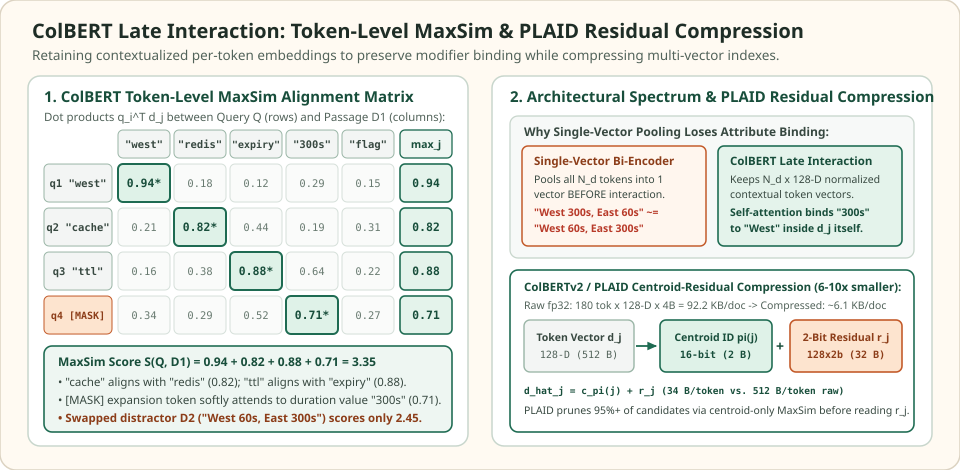

Multi-vector late interaction: preserve token-level alignment with ColBERT MaxSim
Single-vector bi-encoders force an entire $200$-token passage through an information bottleneck: mean or [CLS] pooling collapses $N_d$ contextualized token states into a single $d$-dimensional vector before the query is ever seen. When a passage mentions multiple entities, regions, or numeric thresholds, pooling averages their feature axes together and erases attribute binding—who did what to which parameter.
ColBERT (Contextualized Late Interaction over BERT, Khattab & Zaharia, SIGIR 2020) eliminates that pooling bottleneck while keeping document encoding $100\%$ offline. Instead of storing one vector per passage, ColBERT projects and $\ell_2$-normalizes every token into a compact $128$-dimensional vector, then scores query-to-passage alignment at search time via the sum-of-row-maxima (MaxSim) operator.
When single-vector pooling confuses which region owns which TTL
Attribute-binding puzzle · 4 query tokens · 5 passage tokens
Suppose an engineer queries $Q$: west cache ttl [MASK] (asking for the West region's cache expiry). Compare two multi-clause passages containing the exact same bag of concepts: $D_1$ states West uses a 300s Redis cache expiry flag while East uses 60s, whereas $D_2$ swaps the bindings: West uses a 60s retry timeout while East uses a 300s Redis cache expiry flag. Because $D_1$ and $D_2$ contain the same regions (West, East), numbers (300s, 60s), and nouns, a mean-pooled single-vector bi-encoder assigns them virtually identical passage embeddings.


Why does ColBERT separate $D_1$ ($S = 3.35$) from the swapped distractor $D_2$ ($S = 2.45$)? Inside the Transformer encoder, self-attention contextualizes every token embedding $\mathbf{d}_j$ with the subject of its clause. In $D_1$, the token vectors for redis, expiry, and 300s absorb a positive West regional component from their local clause, so query tokens $q_2$ (west-cache), $q_3$ (west-ttl), and $q_4$ ([MASK]) achieve high dot products ($0.82, 0.88, 0.71$). In $D_2$, redis, expiry, and 300s belong to the East clause, rotating their token vectors away from the West-contextualized query vectors ($0.52, 0.56, 0.43$).
Row-by-row ColBERT MaxSim alignment breakdown comparing true passage D1 (West = 300s cache expiry) against swapped distractor D2 (West = 60s retry, East = 300s cache expiry).
| Query token $\mathbf{q}_i$ | Best token in $D_1$ | $D_1$ row $\max_j \mathbf{q}_i^\top \mathbf{d}_j$ | Best token in $D_2$ (swapped) | $D_2$ row $\max_j \mathbf{q}_i^\top \mathbf{d}_j$ | Why $D_1$ wins this row |
|---|---|---|---|---|---|
| q1: "west" | d1: "west" | 0.94 | d1: "west" | 0.94 | Both passages mention West explicitly |
| q2: "cache" | d2: "redis" (West clause) | 0.82 | d6: "redis" (East clause) | 0.52 | $D_1$ binds Redis to West; $D_2$ binds it to East |
| q3: "ttl" | d3: "expiry" (West clause) | 0.88 | d7: "expiry" (East clause) | 0.56 | $D_1$ binds expiry to West; $D_2$ binds it to East |
| q4: "[MASK]" | d4: "300s" (West clause) | 0.71 | d2: "60s" / d8: "300s" | 0.43 | Soft expansion attends to West-bound duration |
| Total MaxSim $S(Q, D)$ | Sum of 4 row maxima | 3.35 (#1) | Sum of 4 row maxima | 2.45 (#2) | +0.90 margin from preserved modifier binding |
Scroll horizontally to compare the columns. Keyboard: focus the table, then use the left and right arrow keys.
The Late Interaction MaxSim operator and [MASK] query augmentation
ColBERT prepends a modality token ([Q] for queries, [D] for documents), passes each sequence independently through a shared Transformer backbone, projects each output hidden state from $H = 768$ down to a lower dimension $d = 128$ via a learned linear layer without activation, and $\ell_2$-normalizes every token vector to unit length:
During document indexing, punctuation symbols are stripped by $\operatorname{Filter}(\cdot)$ to save space, while queries are padded with [MASK] tokens up to a fixed length $N_q = 32$. At query time, relevance is computed by the asymmetric MaxSim operator—the sum over all $N_q$ query tokens of each query token's maximum inner product across the $N_d$ passage tokens:
Two architectural properties make this operator work so well in practice:
- Asymmetric coverage ($\sum_{i \in Q} \max_{j \in D}$): Every query token must find a strong match somewhere in the passage to maximize the sum, but extra unrelated clauses in a long passage do not dilute the existing token vectors $\mathbf{d}_j$ the way mean pooling does.
- Differentiable query expansion via
[MASK]padding: Because query sequences are padded to $N_q = 32$ with[MASK]tokens before entering BERT's bidirectional self-attention layers, ColBERT learns to project those[MASK]positions into contextualized expansion vectors (such as unit-of-time markers like300sor synonyms) and re-weights important query concepts without external synonym tables.
Index footprint math and ColBERTv2 / PLAID residual compression
Storing uncompressed per-token vectors creates a severe storage multiplier. A single-vector $768\text{-D}$ float32 bi-encoder uses $768 \times 4 = 3{,}072\text{ bytes}$ ($\approx 3.0\text{ KB}$) per passage. By contrast, a ColBERTv1 index storing $N_d = 180$ tokens of dimension $d = 128$ in float32 requires:
Even in float16 ($46.1\text{ KB/passage}$), indexing $10\text{M}$ passages would consume $461\text{ GB}$ of RAM. ColBERTv2 (Santhanam et al., NAACL 2022) exploits the fact that contextualized token embeddings cluster tightly around word-sense prototypes. It partitions the embedding space into $K_c$ coarse centroids $\{\mathbf{c}_1, \dots, \mathbf{c}_{K_c}\} \subset \mathbb{R}^d$ via $k$-means (typically $K_c = 2^{16} = 65{,}536$) and encodes each token vector $\mathbf{d}_j$ as its nearest centroid ID $\pi(j)$ plus a $b$-bit quantized residual vector $\mathbf{r}_j$ ($b \in \{1, 2\}$ bits per dimension):
With a $16$-bit centroid ID ($2\text{ bytes}$) and a $2$-bit residual across $128$ dimensions ($128 \times 2 / 8 = 32\text{ bytes}$), each token vector shrinks from $512\text{ bytes}$ (fp32) or $256\text{ bytes}$ (fp16) down to just $34\text{ bytes/token}$—cutting a $180$-token passage to $180 \times 34 = 6{,}120\text{ bytes} \approx 6.1\text{ KB}$ (only $2\times$ a single-vector float32 index!).
PLAID (Santhanam et al., CIKM 2022) turns this representation into a sub-linear search engine. Instead of decompressing residuals for thousands of passages, PLAID maintains an inverted list mapping each centroid ID $c$ to the passage IDs containing it. At query time, PLAID first computes the $N_q \times K_c$ query-to-centroid dot-product table $\mathbf{q}_i^\top \mathbf{c}_c$ once, then evaluates an upper-bound centroid-only MaxSim score for candidate passages using only their $2$-byte centroid IDs:
Over $95\%$ of candidate passages are pruned in this centroid-only pass; only the top-$k$ survivors have their $2$-bit residuals $\mathbf{r}_j$ fetched and decompressed for exact MaxSim scoring.
When to use ColBERT vs. Bi-Encoders vs. Cross-Encoders
ColBERT occupies the sweet spot between single-vector bi-encoders and full cross-encoders, either as a standalone PLAID primary index or as a fast Stage-1.5 reranker scoring the top-$200$ candidates from a hybrid BM25 + HNSW retriever in $5\text{--}15\text{ ms}$.
| Architecture | Index footprint (per 180-tok passage) | Query-time scoring cost | Attribute binding & out-of-domain robustness |
|---|---|---|---|
| Single-Vector Bi-Encoder ($768\text{-D}$) | $\sim 3.0\text{ KB}$ (fp32) or $1.5\text{ KB}$ (fp16) | $1$ dot product per candidate ($O(d)$) | Weak on multi-clause modifier binding and rare domain entities; prone to pooling dilution |
| ColBERTv2 + PLAID ($N_d \times 128\text{-D}$, $2\text{-bit}$) | $\sim 6.1\text{ KB}$ ($34\text{ B/tok}$ compressed vs. $92.2\text{ KB}$ raw fp32) | Centroid pruning + $N_q \times N_d$ MaxSim ($O(N_q N_d d)$ on top survivors) | Strong token-level binding and zero-shot BEIR generalization; $10\text{--}50\times$ faster than cross-encoders |
| Full Cross-Encoder ($\operatorname{BERT}(q \Vert d)$) | Cannot pre-index vectors (requires raw text) | Full $L$-layer Transformer pass per candidate ($O(L(N_q + N_d)^2 H)$) | Highest cross-token attention fidelity, but restricted to reranking the final $20\text{--}50$ candidates |
import math
# 1. Verify the 4x5 ColBERT MaxSim alignment matrix from Figure 1
alignment_D1 = [
[0.94, 0.18, 0.12, 0.29, 0.15], # q1: "west" -> max 0.94 at d1 "west"
[0.21, 0.82, 0.44, 0.19, 0.31], # q2: "cache" -> max 0.82 at d2 "redis"
[0.16, 0.38, 0.88, 0.64, 0.22], # q3: "ttl" -> max 0.88 at d3 "expiry"
[0.34, 0.29, 0.52, 0.71, 0.27], # q4: "[MASK]" -> max 0.71 at d4 "300s"
]
row_maxima_D1 = [max(row) for row in alignment_D1]
assert row_maxima_D1 == [0.94, 0.82, 0.88, 0.71]
assert math.isclose(sum(row_maxima_D1), 3.35)
# 2. Geometric proof: why single-vector mean pooling fails attribute binding
# 3D unit token space: [Axis 0: Region (+West / -East), Axis 1: Cache/TTL, Axis 2: 300s vs 60s]
def l2_norm(v):
n = math.sqrt(sum(x * x for x in v))
return [x / n for x in v]
def dot(u, v):
return sum(a * b for a, b in zip(u, v))
# Query asks for West (+1) Cache/TTL (+1) Duration (+1)
Q_vecs = [
l2_norm([1.0, 0.2, 0.0]), # q1: "west"
l2_norm([0.6, 0.8, 0.0]), # q2: "cache" (contextualized by "west")
l2_norm([0.5, 0.5, 0.7]), # q3: "ttl" (contextualized by "west")
]
# D1 binds Cache+300s to West (+0.7) and Retry+60s to East (-0.7)
D1_vecs = [
l2_norm([ 1.0, 0.1, 0.0]), # "west"
l2_norm([ 0.7, 0.7, 0.6]), # "300s-cache-ttl" (bound to West: +0.7)
l2_norm([-1.0, 0.1, 0.0]), # "east"
l2_norm([-0.7, -0.7, -0.6]), # "60s-retry" (bound to East: -0.7)
]
# D2 swaps the clause bindings: Retry+60s is bound to West (+0.7), Cache+300s to East (-0.7)
D2_vecs = [
l2_norm([ 1.0, 0.1, 0.0]), # "west"
l2_norm([ 0.7, -0.7, -0.6]), # "60s-retry" (bound to West: +0.7)
l2_norm([-1.0, 0.1, 0.0]), # "east"
l2_norm([-0.7, 0.7, 0.6]), # "300s-cache-ttl" (bound to East: -0.7)
]
def mean_pool(vecs):
d = len(vecs[0])
return l2_norm([sum(v[k] for v in vecs) / len(vecs) for k in range(d)])
def maxsim(q_mat, d_mat):
return sum(max(dot(q_i, d_j) for d_j in d_mat) for q_i in q_mat)
# Mean pooling cancels opposite clauses and gives D1 and D2 the EXACT SAME score!
q_pooled = mean_pool(Q_vecs)
assert math.isclose(dot(q_pooled, mean_pool(D1_vecs)), dot(q_pooled, mean_pool(D2_vecs)))
# ColBERT MaxSim cleanly separates D1 from D2
score_D1 = maxsim(Q_vecs, D1_vecs)
score_D2 = maxsim(Q_vecs, D2_vecs)
assert score_D1 > score_D2 + 0.55
# 3. Verify ColBERTv2 / PLAID storage footprint reduction (180 tokens, d = 128)
bytes_fp32 = 180 * 128 * 4
bytes_plaid_2bit = 180 * (2 + (128 * 2) // 8) # 2B centroid ID + 32B 2-bit residual
assert bytes_fp32 == 92160 and bytes_plaid_2bit == 6120
print(f"MaxSim(Q, D1) = {score_D1:.3f} vs MaxSim(Q, D2) = {score_D2:.3f}")
print(f"Compression: {bytes_fp32 / 1024:.1f} KB -> {bytes_plaid_2bit / 1024:.1f} KB ({bytes_fp32 / bytes_plaid_2bit:.1f}x)")Check the operating assumptions
Why is ColBERT's MaxSim operator asymmetric (summing over query tokens of the max over document tokens) instead of symmetric?
A user query is short and specifies required constraints, whereas a passage is long and contains many background clauses unrelated to the current query. Taking the maximum over document tokens for each query token checks whether every query concept is satisfied somewhere in the passage; reversing the operator to sum over all document tokens would penalize comprehensive passages for containing extra facts not mentioned in the query.
How can [MASK] tokens appended to a query improve retrieval recall when [MASK] contains no lexical text of its own?
Because the [MASK] tokens pass through all layers of BERT's bidirectional self-attention alongside the real query words, their final 128-D embeddings become contextualized projections of the query's intent (acting as learned soft query expansion terms or importance weights that match related domain vocabulary in the passage).
Why does PLAID evaluate centroid-only MaxSim scores before reading the 2-bit residual vectors?
Because K_c coarse centroids are shared across the entire corpus, a query of N_q = 32 tokens requires only 32 x K_c dot products once per query to precompute a lookup table of query-to-centroid similarities. Candidate passages can then be scored and pruned using only 16-bit integer lookups without decompressing 128-dimensional residual vectors for 95%+ of the candidate list.
Sources
- Khattab & Zaharia: ColBERT: Efficient and Effective Passage Search via Contextualized Late Interaction over BERT, SIGIR 2020 (late interaction architecture, MaxSim operator, and
[MASK]query augmentation). - Santhanam et al.: ColBERTv2: Effective and Efficient Retrieval via Lightweight Late Interaction, NAACL 2022 (centroid-residual representation and 1/2-bit residual quantization).
- Santhanam et al.: PLAID: An Efficient Engine for Late Interaction Retrieval, CIKM 2022 (centroid interaction, inverted list pruning, and sub-linear multi-vector search).